10/17にプレイズ大阪日本橋本店で開かれたシリアルカードチャレンジ 10月の大会で、赤/緑のデッキが優勝した。10/1〜10/18に入賞した赤/緑の83デッキを見ると、ダークネスフィンガーは95%、機体奪取は94%、キュベレイは84%が入れている。このデッキはそのどれも入れていない。コマンドは0枚。15種50枚のうち13種が〔クラン〕で、赤/緑での採用率が10%未満のカードが13種42枚ある。
デッキリスト
ユニット33枚・パイロット12枚・ベース5枚・コマンド0枚。大会ページ: プレイズ大阪日本橋本店 10/17。
| カード | 種類 | 色 | Lv | コスト | AP/HP | 枚数 | 赤/緑での採用率 |
|---|---|---|---|---|---|---|---|
| ST06-007 リック・ドム オルテガ機（GQ） 珍 | ユニット | 緑 | 3 | 2 | 3/2 | 2 | 2.4% (2) |
| ST06-008 ゲルググ スガイ機（GQ） 珍 | ユニット | 緑 | 3 | 2 | 3/3 | 4 | 2.4% (2) |
| ST12-005 GQuuuuuuX（オメガ・サイコミュ起動時） 珍 | ユニット | 赤 | 3 | 2 | 3/2 | 4 | 3.6% (3) |
| GD03-039 赤いガンダム 珍 | ユニット | 赤 | 4 | 2 | 2/4 | 4 | 2.4% (2) |
| ST06-006 赤いガンダム 珍 | ユニット | 緑 | 4 | 2 | 3/4 | 4 | 2.4% (2) |
| ST06-002 GQuuuuuuX（オメガ・サイコミュ起動時） 珍 | ユニット | 赤 | 4 | 3 | 4/2 | 2 | 1.2% (1) |
| ST06-005 赤いガンダム 珍 | ユニット | 緑 | 4 | 3 | 4/3 | 4 | 2.4% (2) |
| GD03-035 GFreD | ユニット | 赤 | 6 | 4 | 4/5 | 4 | 24.1% (20) |
| GD02-038 GQuuuuuuX（オメガ・サイコミュ起動時） 珍 | ユニット | 赤 | 7 | 5 | 5/4 | 2 | 2.4% (2) |
| GD03-034 GQuuuuuuX（オメガ・サイコミュ起動時） 珍 | ユニット | 赤 | 8 | 7 | 6/5 | 3 | 6.0% (5) |
| GD03-092 ニャアン 珍 | パイロット | 赤 | 4 | 1 | — | 4 | 4.8% (4) |
| ST06-009 アマテ・ユズリハ（マチュ） 珍 | パイロット | 赤 | 4 | 1 | — | 4 | 2.4% (2) |
| ST06-010 シュウジ・イトウ 珍 | パイロット | 緑 | 4 | 1 | — | 4 | 2.4% (2) |
| GD02-126 シュウジの隠れ家 | ベース | 赤 | 3 | 1 | —/5 | 4 | 21.7% (18) |
| ST06-014 クランバトル 珍 | ベース | 赤 | 3 | 1 | —/5 | 1 | 2.4% (2) |
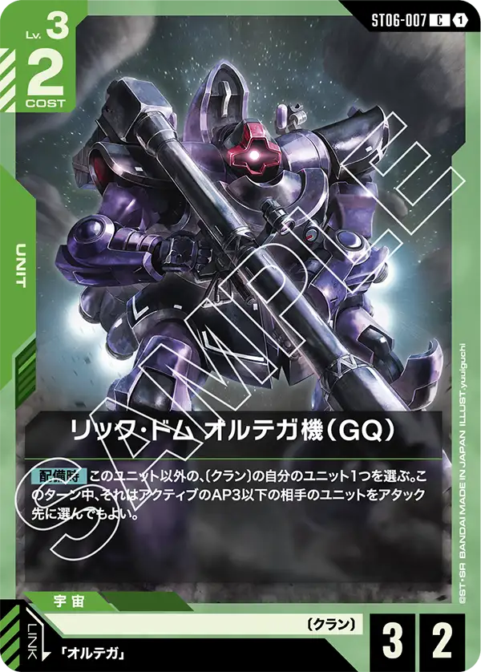
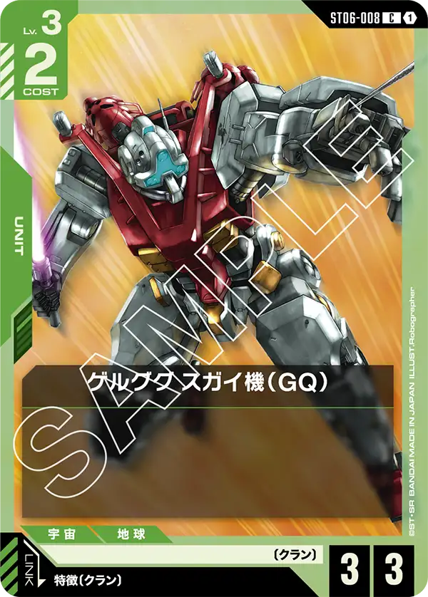
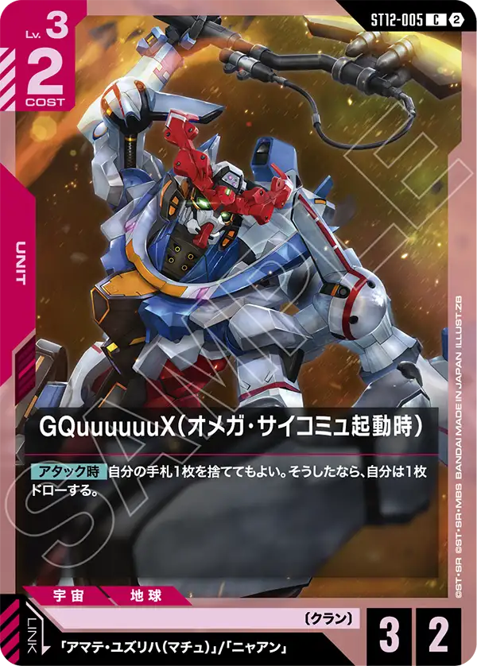
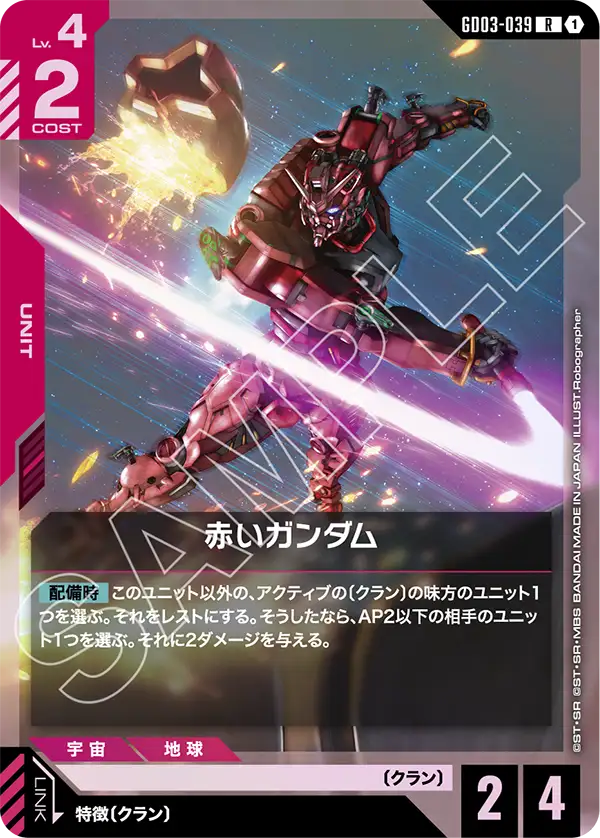
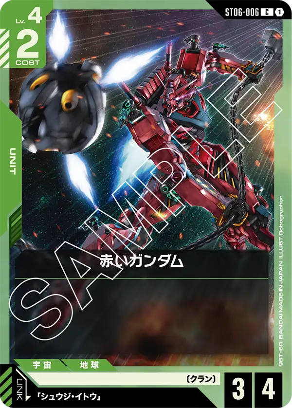
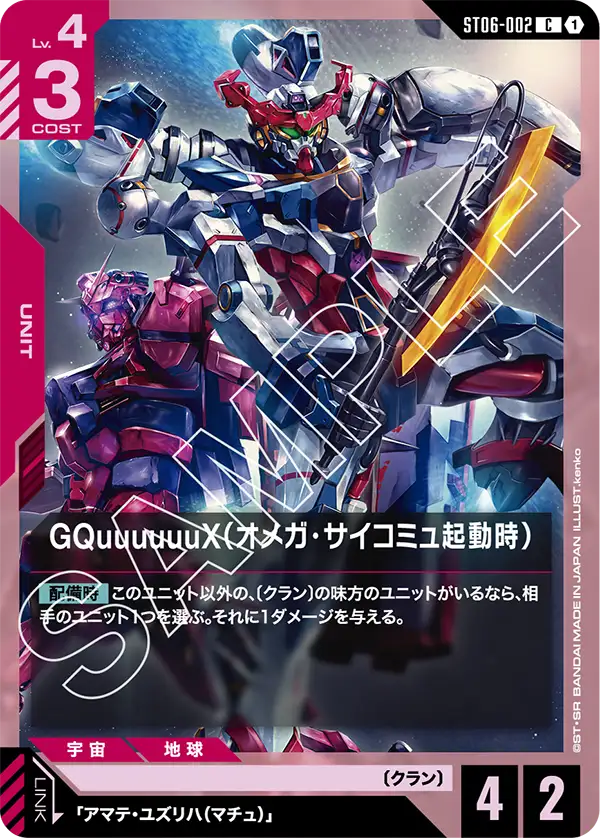
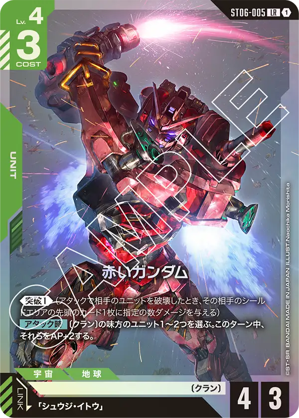

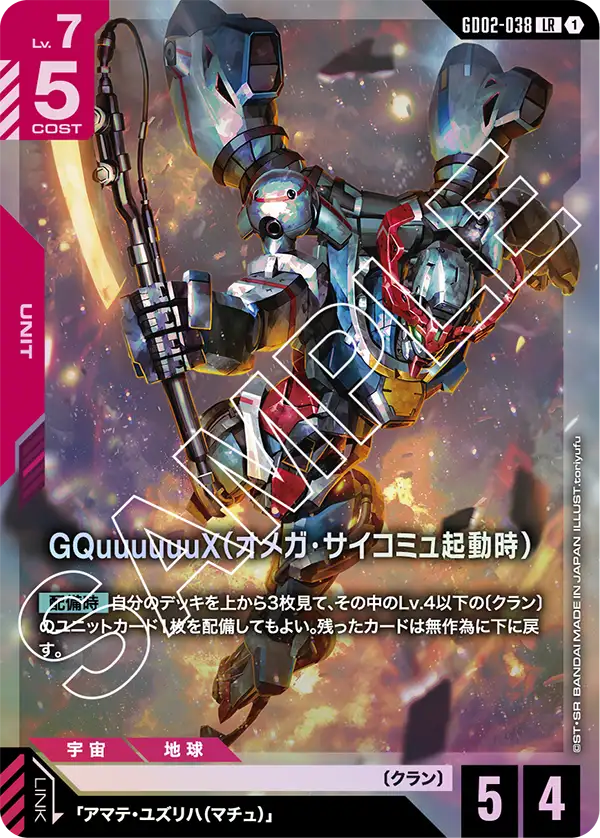


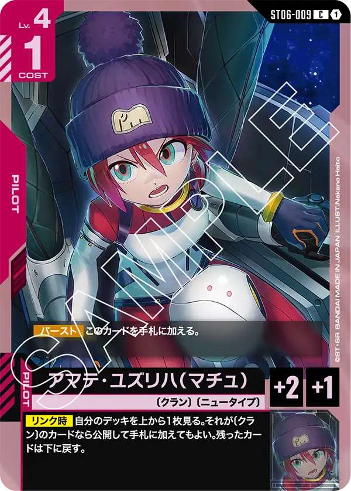
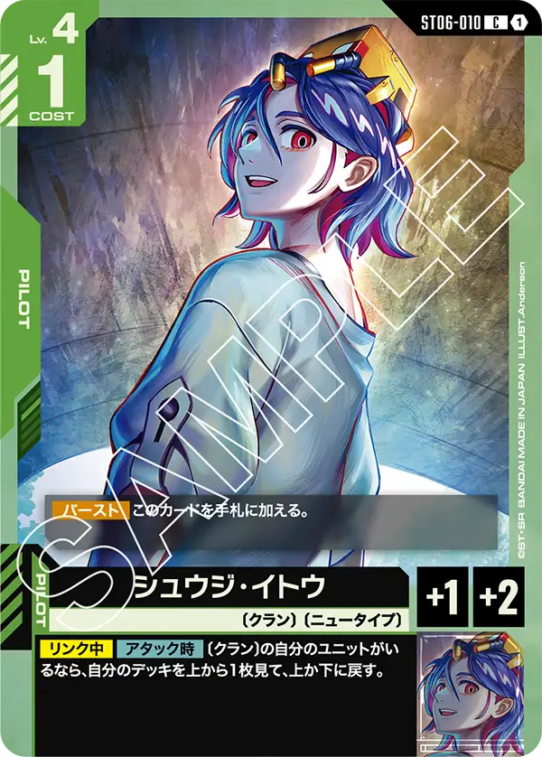
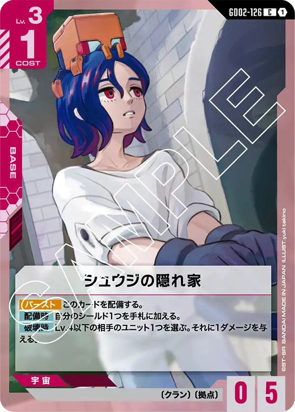
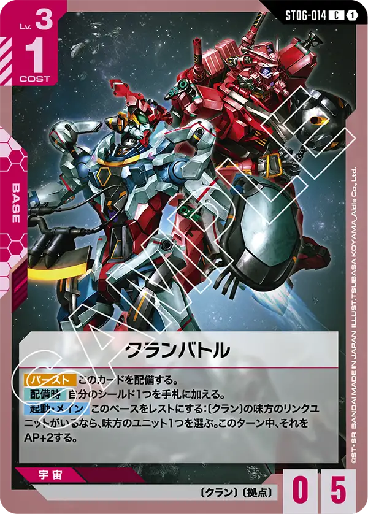
構成の見どころ
GQuuuuuuX 4種11枚でレベル帯を埋める
GQuuuuuuX（オメガ・サイコミュ起動時）はLv3のST12-005（4枚）、Lv4のST06-002（2枚）、Lv7のGD02-038（2枚）、Lv8のGD03-034（3枚）の4種。どれもリンク先がマチュで、GD03-034とST12-005はニャアンにもリンクする。GD02-038の【配備時】はデッキの上3枚からLv4以下の〔クラン〕ユニットを配備する効果で、このデッキのLv4以下の〔クラン〕ユニットは7種24枚で、33枚のユニットの7割を占める。
赤いガンダム3種12枚
赤のGD03-039は〔クラン〕の味方をレストにしてAP2以下に2ダメージ、緑のST06-005は《突破1》と【アタック時】の〔クラン〕AP+2、緑のST06-006はコスト2のAP3/HP4で効果なし。3種とも4枚で、Lv4のユニット14枚のうち12枚が赤いガンダム。GD02-038の【配備時】で拾えるLv4以下の〔クラン〕ユニット24枚のうち、半分がこの12枚。
パイロットは3種12枚、すべてLv4コスト1
マチュ・シュウジ・ニャアンの3種が各4枚。3種とも【バースト】で手札に加わる。ニャアンの【リンク時】はデッキの上1枚をトラッシュに置き、それが〔ジオン〕か〔クラン〕なら相手ユニット1つに1ダメージを与える効果で、このデッキの50枚中、〔クラン〕か〔ジオン〕の特徴を持たないカードは0枚。
採用率10%を超えるのはGFreDと隠れ家の2種だけ
GFreDとシュウジの隠れ家だけが、赤/緑の5本に1本以上が入れているカード。GFreDは【起動・メイン】でトラッシュのパイロットを除外して相手ユニット全体に1ダメージを与えるので、パイロット12枚を抱えるこのデッキでは弾に困らない。
同じ型の入賞
10/12のBOOKOFF SUPER BAZAAR 西友大森店で8位に入ったデッキも同じ型で、15種のうち13種が共通。違いは3つ。今回の優勝デッキはシュウジの隠れ家4枚とLv4のGQuuuuuuX2枚を足し、Lv5のGQuuuuuuX4枚と冷徹な戦術1枚を抜いた。クランバトルは3枚から1枚に減っている。共通する13種のうち、クランバトルを含む6種は枚数が違う。10/1〜10/18の赤/緑83デッキで〔クラン〕を軸にしたのはこの2本だけ。
運営のひとこと
珍しいデッキが入賞した。
赤緑クランは一部の熱狂的なプレイヤーが非常に好み使い続けている噛めば噛むほど味が出てくるデッキだと言うことは多くのプレイヤーが知っているだろう。
しかし入賞まではなかなか遠かったがついに優勝した。
GQuuuuuuX（オメガ・サイコミュ起動時）[ST12-005]が新弾のカードとして採用されている、アマテ・ユズリハ（マチュ）やニャアンがリンク対象と言うこととアタック時に手札入れ替えができることをすべて万遍なく利用できる。
また、最近採用率も高くなってきていたGFreD[GD03-035]やシュウジの隠れ家[GD02-126]もムリ無く採用ができることから優勝の兆しはあったのだろう。
選択肢も非常に多いデッキなので使いこなすには多くの練習が必要になるが、使いこなすことができればガンダムカードゲームの楽しさがより深まるだろう。
次弾からはジークアクスデッキはクランからアルファ殺しに切り替わるのが非常に惜しいところ。
また追加カードが登場することを祈る。
数え方
採用率は10/1〜10/18のシリアルカードチャレンジ 10月の入賞デッキのうち、デッキカラーが赤/緑の83本を母数にした。「珍」は赤/緑での採用率が10%未満のカード。デッキリストが公開されていない入賞デッキは数に入れていない。数字は公式の大会結果から自動で集めた集計で、誤りに気づいたらXアカウント（@gcg_stats）のDMで教えてほしい。